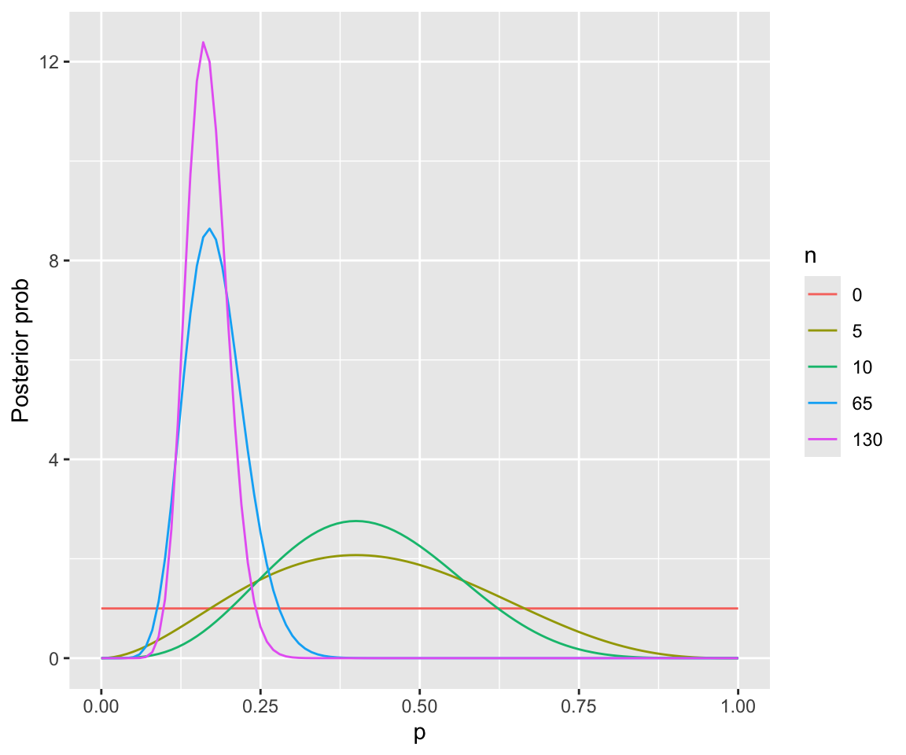
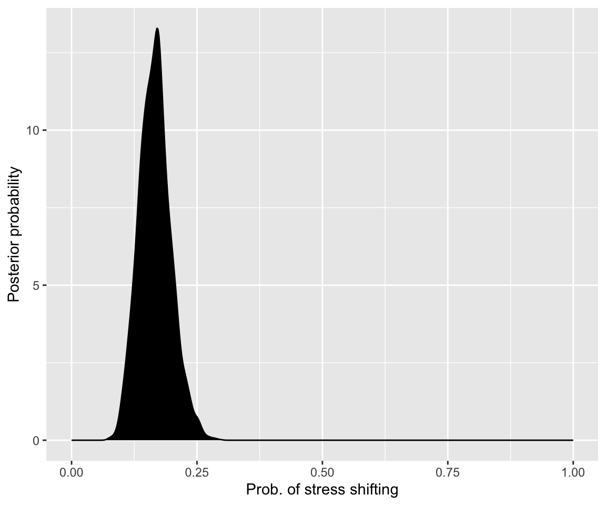

library(arm) # for the invlogit function
library(tidyverse)
library(brms)1 Bayesian basics 1
These lecture notes cover topics from:
Note that Kurz (2023) is a “translation” of McElreath (2020) into tidyverse and brms code.
1.1 Preliminaries
Load libraries we will need:
Practical note
If you have loaded rethinking, you need to detach it before using brms. See Sec 4.3.1 of Kurz.
Load the diatones dataset from Regression Modeling for Linguistic Data:
diatones <- read.csv("https://osf.io/tqjm8/download")This dataset is described in Sec. 6.1.1 of Sonderegger (2023),1 where you can learn more as needed. For the moment, all we need to know is:
- There are 130 observations: English noun/verb pairs (or “words”) like “research”, “combat”.
- All had noun and verb forms pronounced with final stress (“proTEST”) in 1700.
stress_shiftedindicates whether the noun form of the verb shifted stress between 1700 and 2005—e.g. “protest” and “debate” havestress_shifted=1, 0.
1.2 Bayes’ theorem
Bayes’ theorem (or “rule”) says that for any events \(A\) and \(B\):
\[ P(A|B) = \frac{P(B|A) P(A)}{P(B)} \]
Here, \(P(A|B)\) and \(P(B|A)\) are conditional probabilities, and Bayes’ theorem follows almost directly from the definition of conditional probabilities. We can think of \(A\) and \(B\) above as discrete random variables, and the same rule holds for continuous random variables (that is, their probability density functions).
- Note: a method which uses Bayes rule is not (automatically) “Bayesian” (McElreath pp. 38-39 box).
It is customary to introduce Bayes’ theorem with an example where \(A\) and \(B\) are discrete, like medical diagnostics, to develop intuition for how it works and can give unexpected results, even in a simple case. An exercise is below (to skip in class).
Exercise 1.1 Open Chapter 5 of Seeing Theory and go to “Bayes Theorem”. Consider a Covid-19 testing example, characteristic of the early days of the pandemic:
\(P(D)\) = 0.05, \(P(H)\) = 0.95
\(P(+|D) = 0.99\), \(P(-|H)=0.95\)
That is, the test detects Covid near-perfectly in people who have the disease (“very high sensitivity”), and gives a few false positives for people who don’t (“high specificity”). We assume that the base rate—the percentage of people who have Covid—is low (5%).
- What is the posterior probability \(P(D|+)\)—that is, the probability that someone has Covid if they test positive?
- Why might your answer seem surprising?
- Now suppose that the base rate is 0.25 (25% of the population is infected). What is \(P(D|+)\) now?
1.3 Prior, likelihood, posterior
McElreath (Sec. 2.1-2.2) introduces key concepts of Bayesian inference using marble-counting and “globe tossing” examples. We will instead use a simple linguistic example, after first introducing notation:
- We are interested in a parameter, \(p\).2
- We observe data \(D\) to estimate the parameters.
- We have some knowledge about how likely different parameter values are, the prior (probability): \(P(p)\)
- The likelihood is the probability of the data for a particular parameter value: \(P(D|p)\).
- The posterior (probability) is the plausibility of any parameter value (\(p\)) after seeing the data: \(P(p|D)\).
Bayes’ rule gives:
\[ P(p | D ) = \frac{P(D|p) P(p)}{P(D)} \]
\(P(D)\) is called the average probability or marginal likelihood, or other names.
Consider the diatones data:
- \(p_{\text{shift}}\) is the probability that a word of English shifts stress between 1700 and 2005.
- The data is a sequence of 0 or 1 values.
- Technically: each is a measurement of a random variable \(y\). The \(i\)th observation is \(y_i\). In this data \(y_1 = 1\), \(y_2 = 0\), and so on.
diatones %>% select(word, stress_shifted) %>% head()
## word stress_shifted
## 1 proceed 1
## 2 protest 1
## 3 debate 0
## 4 debauch 0
## 5 decay 0
## 6 decease 1xtabs(~stress_shifted, data=diatones)
## stress_shifted
## 0 1
## 109 21To build a Bayesian model we must specify the exact data, then fit the model to the data. It is useful to always first have a data story (McElreath 2.2), describing the generative process behind the data. This helps to write down the model.
In our case, the story is just a description of how the process leading to this sample:
- We have no prior knowledge about how likely English N/V pairs (“words”) are to shift stress.
- The true proportion of words which shift stress is \(p\).
- Every time we look up a new English word in the 1700 and 2005 dictionaries, we get a new 0 (stress didn’t shift) or 1 (stress shifted) observation, \(y\).
- Each word lookup is independent of the others.
(I have added a Step 0 for the prior, which McElreath doesn’t include.)
We observe \(N\) words, of which \(k\) have shifted stress.
This lets us write down a probability model:
- \(p \sim \text{Uniform}(0,1)\)
- \(k \sim \text{Binomial}(N, p)\)
See here what the binomial distribution looks like for different \(N\) and \(p\) values, if you’re rusty.
This probability model means the pieces \(P(p)\), \(P(D|p)\), and \(P(D)\) of the equation above are all defined: once we know the observed data (\(D\)), the posterior distribution automatically results (left-hand side of Bayes’ rule above).
This is Bayesian update, which can be thought of either as:
An incremental process—update the posterior after \(y_i\); this is the prior when we see \(y_{i+1}\).
Seeing all \(N\) observations at once—update the posterior once.
We can substitute the formula for binomial likelihood in to Bayes’ rule in this case to give the mathematical formula for the posterior:
\[ P(p | k) = \frac{{n\choose{k}} p^{k}(1-p)^{n-k}}{P(k)} \quad \text{for } 0 \le p \le 1 \]
(The prior here, \(P(p)\), is flat, a.k.a. uniform: it is 1 when \(0 \le p \le 1\) and 0 otherwise.)
It is common to just write this kind of Bayesian update without the denominator, which is only there to make sure the posterior distribution is a probability distribution (it sums to 1 over all possible values of \(p\)). This is written with the “proportional to” symbol:
\[ P(p | k) \propto {n\choose{k}} p^{k}(1-p)^{n-k} \quad \text{for } 0 \le p \le 1 \]
If you find the analytic derivation or more details for this case helpful, see Sec Sec. 2.2 of Nicenboim, Schad, and Vaishth (2024). (If you find the math confusing, don’t worry.)
Exercise 1.2 We will instead get a feel for Bayesian update visually, by playing with the Seeing Theory app here.
This app shows a beta prior on \(p\), which has parameters \(\alpha\) and \(\beta\). When \(\alpha=\beta=1\), this is a uniform distribution (over \(p \in [0,1]\)).
Let \(p=0.2\) for this example—meaning that in reality, 1/5 of words shifted stress.
With default settings, change \(p=0.2\). Click “flip the coin” 5 times, and watch what happens. Do this again (resetting first) a few times.
- What is the same every time? (Does the posterior narrow? Shift right or left?)
- What is different every time?
Exercise 1.3 Now do the same exercise, with 50 flips (with \(p=0.2\))—use “Flip 10 times”x5.
Exercise 1.4 Play around with \(\alpha\) and \(\beta\) to get priors which captures the intuition that:
- Values of \(p\) further from 0 are less likely
- Values of \(p\) further from 1 are less likely
- Values of \(p\) which are below 0.05 or above 0.95 are very unlikely
Linguistics note
Each of these priors could be reasonable when studying different kinds of language variation and change.
For example, prior (b) could be applied for data from a completed sound change, to capture the intuition that most sound changes eventually apply to all possible words (the “Neogrammarian hypothesis”). Prior (c) could be applied to data from a sound change in progress.
We will discuss soon how to actually choose priors. The goal for now is just to get comfortable thinking about the concept, and the effect they have on the final model (the posterior).
1.4 Prior vs. posterior and sample size
Now let’s try manually computing the posterior distribution, starting from a uniform prior for \(p\), for our diatones example. (This is the case being simulated in the Seeing Theory app.)
The plot below shows the prior and the posterior, assuming we have just seen the first:
- 5 observations
- 10 observations
- 65 observations (50% of the data)
- 130 observations (all data)
We can do this without simulation, in this case, because the beta distribution is the conjugate prior for a binomial distribution—meaning that the posterior is also a beta distribution. You don’t need to understand this code.
# Beta is conjugate prior for binomial means:
# If you start with a Beta(\alpha, \beta) prior,
# then observe $k$ $y=1$ observations of $N$ total, the posterior is:
# Beta(k+\alpha, N-k + \beta)
# For this case:
#The numbers of observations with `stress_shifted`=1 in the first 5/10/65/130 observations are:
k_5 <- sum(diatones$stress_shifted[1:5])
k_10 <- sum(diatones$stress_shifted[1:10])
k_65 <- sum(diatones$stress_shifted[1:65])
k_130 <- sum(diatones$stress_shifted[1:130])
#set up a vector of p=0...1
p_vec <- seq(0,1, by=0.01)
# beta dist parameters for the prior
a <- 1
b <- 1
## ugly generation of posterior for each case -- should use a map function!
bind_rows(
data.frame(p=p_vec, post=dbeta(p_vec, a,b), n=0),
data.frame(p=p_vec, post=dbeta(p_vec, a+k_5,b+5-k_5), n=5),
data.frame(p=p_vec, post=dbeta(p_vec, a+k_10,b+10-k_10), n=10),
data.frame(p=p_vec, post=dbeta(p_vec, a+k_65,b+65-k_65), n=65),
data.frame(p=p_vec, post=dbeta(p_vec, a+k_130,b+130-k_130), n=130)
) %>% mutate(n=factor(n)) %>% ## make the plot
ggplot(aes(x=p, y=post)) + geom_line(aes(color=n)) +
ylab("Posterior prob") 
Note how the posterior shifts a lot more in the first 10 observations than in the last 50% of observations.
This example demonstrates how:
- The posterior is a compromise between the prior and the likelihood
- For smaller samples, the prior matters more
- For large enough samples, the likelihood dominates
Again, Sec. 2.2 of BDA for CogSci shows a similar example in much more detail (and discusses what “conjugate prior” means).
In practice you rarely have to do Bayesian analyses “analytically”, by manually calculating the posterior distribution, and it is impossible for more realistic models. It is worth seeing this one example to emphasize that at a low level, every Bayesian model is just doing this process: given a prior and a probability model, calculate the likelihood of the observed data, use it to compute the posterior.
This is different from frequentist methods: even for a linear regression, much less a mixed-effects model, it’s often harder to conceptualize what fitting the model is “doing”. The black magic part of Bayesian modeling is the MCMC methods used to actually fit the models (compute the posterior)—but this is conceptually separate.
Exercise 1.5
Redo the plot above, now using a different prior: the one you chose for “Values of \(p\) which are below 0.05 or above 0.95 are very unlikely” above. This just requires changing
aandbin the code.Re-generate the plot with these
aandb. What do you notice, comparing the two plots for lowern(5, 10) and highern(65, 130)?
1.5 Computing the posterior
For most realistic models it is not possible to manually compute the posterior, so an approximation method is used. McElreath makes extensive use in the first chapters of two methods:
- Grid approximation
- Quadratic approximation, closely related to the MAP estimate (“maximum a -posteriori”)
We will not be using these, but they are worth knowing about—especially MAP, which often gives similar results to frequentist methods.
Practical note
An important practical example is the blme package for fitting lme4-style mixed-effects models. This package:
- Redefines these models in a Bayesian framework
- Uses weakly-informative priors (more on this later)
- Returns MAP estimates of model parameters (fixed, random-effect coefficients).
This alone is enough to eliminate many model convergence woes with lme4 models, and fitting a blme model is often faster than the equivalent brms model. It will be less accurate (as the MAP approximation is just that).
1.5.1 MCMC
Instead, we will follow Kurz by immediately turning to a third method—Markov Chain Monte Carlo (MCMC)—which is more generally applicable.
For now we will just introduce MCMC at a high level, and will return for more discussion in a future week. (hopefully) return in more detail in a later week. There are various introductions online (post one you like!) if you’d like to go further, at varying levels of technical detail. A relevant McElreath blog post is here.
The basic idea behind MCMC is that it is often much easier to simulate from a posterior distribution than to actually compute it. MCMC algorithms “walk around” the posterior distribution in a stochastic way, taking a sample of the parameters (here, \(p\)) at each step. “walk around” is defined such that the sample approximates the posterior distribution—once you wait long enough.
The simplest MCMC algorithm is called Metropolis-Hastings. MCMC is “easier to see than to understand” (McElreath). Open this demo, by Chi Feng, then:
- Click “Random Walk Metropolis Hastings”
- Set “target distribution” to “standard”
The underlying distribution here is a 2D Gaussian—a Gaussian hill. (If this is confusing, you can just focus on one dimension—its a Gaussian.) Note how the marginal distributions (on the \(x\) and \(y\) axes) get closer to normal distributions the longer you let the simulation run.
We will discuss some in class.
1.6 brms: a first look
To estimate \(p\) in a frequentist framework, we would fit a logistic regression with an intercept and no predictors:
m1_glm <- glm(stress_shifted ~ 1, data=diatones, family=
'binomial')The estimated intercept, and its 95% confidence intervals are (in log-odds):
coefficients(m1_glm)
## (Intercept)
## -1.646825
confint(m1_glm)
## Waiting for profiling to be done...
## 2.5 % 97.5 %
## -2.141121 -1.202033These correspond in probability to:
invlogit(coefficients(m1_glm))
## (Intercept)
## 0.1615385
invlogit(confint(m1_glm))
## Waiting for profiling to be done...
## 2.5 % 97.5 %
## 0.1051638 0.2311138So the estimate is \(\hat{p} = 0.12\) (95% CI: 0.11-0.23).
The equivalent model is fitted in brms, with a uniform prior on \(p\), as follows:
diatones_m1 <-
brm(data = diatones,
family = binomial(link = "identity"),
stress_shifted | trials(1) ~ 0 + Intercept,
prior(beta(1, 1), class = b, lb = 0, ub = 1)
)
## Only 2 levels detected so that family 'bernoulli' might be a more efficient choice.
## Compiling Stan program...
## Trying to compile a simple C file
## Running /Library/Frameworks/R.framework/Resources/bin/R CMD SHLIB foo.c
## using C compiler: ‘Apple clang version 15.0.0 (clang-1500.1.0.2.5)’
## using SDK: ‘MacOSX14.2.sdk’
## clang -arch arm64 -I"/Library/Frameworks/R.framework/Resources/include" -DNDEBUG -I"/Library/Frameworks/R.framework/Versions/4.4-arm64/Resources/library/Rcpp/include/" -I"/Library/Frameworks/R.framework/Versions/4.4-arm64/Resources/library/RcppEigen/include/" -I"/Library/Frameworks/R.framework/Versions/4.4-arm64/Resources/library/RcppEigen/include/unsupported" -I"/Library/Frameworks/R.framework/Versions/4.4-arm64/Resources/library/BH/include" -I"/Library/Frameworks/R.framework/Versions/4.4-arm64/Resources/library/StanHeaders/include/src/" -I"/Library/Frameworks/R.framework/Versions/4.4-arm64/Resources/library/StanHeaders/include/" -I"/Library/Frameworks/R.framework/Versions/4.4-arm64/Resources/library/RcppParallel/include/" -I"/Library/Frameworks/R.framework/Versions/4.4-arm64/Resources/library/rstan/include" -DEIGEN_NO_DEBUG -DBOOST_DISABLE_ASSERTS -DBOOST_PENDING_INTEGER_LOG2_HPP -DSTAN_THREADS -DUSE_STANC3 -DSTRICT_R_HEADERS -DBOOST_PHOENIX_NO_VARIADIC_EXPRESSION -D_HAS_AUTO_PTR_ETC=0 -include '/Library/Frameworks/R.framework/Versions/4.4-arm64/Resources/library/StanHeaders/include/stan/math/prim/fun/Eigen.hpp' -D_REENTRANT -DRCPP_PARALLEL_USE_TBB=1 -I/opt/R/arm64/include -fPIC -falign-functions=64 -Wall -g -O2 -c foo.c -o foo.o
## In file included from <built-in>:1:
## In file included from /Library/Frameworks/R.framework/Versions/4.4-arm64/Resources/library/StanHeaders/include/stan/math/prim/fun/Eigen.hpp:22:
## In file included from /Library/Frameworks/R.framework/Versions/4.4-arm64/Resources/library/RcppEigen/include/Eigen/Dense:1:
## In file included from /Library/Frameworks/R.framework/Versions/4.4-arm64/Resources/library/RcppEigen/include/Eigen/Core:19:
## /Library/Frameworks/R.framework/Versions/4.4-arm64/Resources/library/RcppEigen/include/Eigen/src/Core/util/Macros.h:679:10: fatal error: 'cmath' file not found
## #include <cmath>
## ^~~~~~~
## 1 error generated.
## make: *** [foo.o] Error 1
## Start sampling
##
## SAMPLING FOR MODEL 'anon_model' NOW (CHAIN 1).
## Chain 1:
## Chain 1: Gradient evaluation took 2.8e-05 seconds
## Chain 1: 1000 transitions using 10 leapfrog steps per transition would take 0.28 seconds.
## Chain 1: Adjust your expectations accordingly!
## Chain 1:
## Chain 1:
## Chain 1: Iteration: 1 / 2000 [ 0%] (Warmup)
## Chain 1: Iteration: 200 / 2000 [ 10%] (Warmup)
## Chain 1: Iteration: 400 / 2000 [ 20%] (Warmup)
## Chain 1: Iteration: 600 / 2000 [ 30%] (Warmup)
## Chain 1: Iteration: 800 / 2000 [ 40%] (Warmup)
## Chain 1: Iteration: 1000 / 2000 [ 50%] (Warmup)
## Chain 1: Iteration: 1001 / 2000 [ 50%] (Sampling)
## Chain 1: Iteration: 1200 / 2000 [ 60%] (Sampling)
## Chain 1: Iteration: 1400 / 2000 [ 70%] (Sampling)
## Chain 1: Iteration: 1600 / 2000 [ 80%] (Sampling)
## Chain 1: Iteration: 1800 / 2000 [ 90%] (Sampling)
## Chain 1: Iteration: 2000 / 2000 [100%] (Sampling)
## Chain 1:
## Chain 1: Elapsed Time: 0.013 seconds (Warm-up)
## Chain 1: 0.012 seconds (Sampling)
## Chain 1: 0.025 seconds (Total)
## Chain 1:
##
## SAMPLING FOR MODEL 'anon_model' NOW (CHAIN 2).
## Chain 2:
## Chain 2: Gradient evaluation took 6e-06 seconds
## Chain 2: 1000 transitions using 10 leapfrog steps per transition would take 0.06 seconds.
## Chain 2: Adjust your expectations accordingly!
## Chain 2:
## Chain 2:
## Chain 2: Iteration: 1 / 2000 [ 0%] (Warmup)
## Chain 2: Iteration: 200 / 2000 [ 10%] (Warmup)
## Chain 2: Iteration: 400 / 2000 [ 20%] (Warmup)
## Chain 2: Iteration: 600 / 2000 [ 30%] (Warmup)
## Chain 2: Iteration: 800 / 2000 [ 40%] (Warmup)
## Chain 2: Iteration: 1000 / 2000 [ 50%] (Warmup)
## Chain 2: Iteration: 1001 / 2000 [ 50%] (Sampling)
## Chain 2: Iteration: 1200 / 2000 [ 60%] (Sampling)
## Chain 2: Iteration: 1400 / 2000 [ 70%] (Sampling)
## Chain 2: Iteration: 1600 / 2000 [ 80%] (Sampling)
## Chain 2: Iteration: 1800 / 2000 [ 90%] (Sampling)
## Chain 2: Iteration: 2000 / 2000 [100%] (Sampling)
## Chain 2:
## Chain 2: Elapsed Time: 0.013 seconds (Warm-up)
## Chain 2: 0.012 seconds (Sampling)
## Chain 2: 0.025 seconds (Total)
## Chain 2:
##
## SAMPLING FOR MODEL 'anon_model' NOW (CHAIN 3).
## Chain 3:
## Chain 3: Gradient evaluation took 4e-06 seconds
## Chain 3: 1000 transitions using 10 leapfrog steps per transition would take 0.04 seconds.
## Chain 3: Adjust your expectations accordingly!
## Chain 3:
## Chain 3:
## Chain 3: Iteration: 1 / 2000 [ 0%] (Warmup)
## Chain 3: Iteration: 200 / 2000 [ 10%] (Warmup)
## Chain 3: Iteration: 400 / 2000 [ 20%] (Warmup)
## Chain 3: Iteration: 600 / 2000 [ 30%] (Warmup)
## Chain 3: Iteration: 800 / 2000 [ 40%] (Warmup)
## Chain 3: Iteration: 1000 / 2000 [ 50%] (Warmup)
## Chain 3: Iteration: 1001 / 2000 [ 50%] (Sampling)
## Chain 3: Iteration: 1200 / 2000 [ 60%] (Sampling)
## Chain 3: Iteration: 1400 / 2000 [ 70%] (Sampling)
## Chain 3: Iteration: 1600 / 2000 [ 80%] (Sampling)
## Chain 3: Iteration: 1800 / 2000 [ 90%] (Sampling)
## Chain 3: Iteration: 2000 / 2000 [100%] (Sampling)
## Chain 3:
## Chain 3: Elapsed Time: 0.013 seconds (Warm-up)
## Chain 3: 0.012 seconds (Sampling)
## Chain 3: 0.025 seconds (Total)
## Chain 3:
##
## SAMPLING FOR MODEL 'anon_model' NOW (CHAIN 4).
## Chain 4:
## Chain 4: Gradient evaluation took 4e-06 seconds
## Chain 4: 1000 transitions using 10 leapfrog steps per transition would take 0.04 seconds.
## Chain 4: Adjust your expectations accordingly!
## Chain 4:
## Chain 4:
## Chain 4: Iteration: 1 / 2000 [ 0%] (Warmup)
## Chain 4: Iteration: 200 / 2000 [ 10%] (Warmup)
## Chain 4: Iteration: 400 / 2000 [ 20%] (Warmup)
## Chain 4: Iteration: 600 / 2000 [ 30%] (Warmup)
## Chain 4: Iteration: 800 / 2000 [ 40%] (Warmup)
## Chain 4: Iteration: 1000 / 2000 [ 50%] (Warmup)
## Chain 4: Iteration: 1001 / 2000 [ 50%] (Sampling)
## Chain 4: Iteration: 1200 / 2000 [ 60%] (Sampling)
## Chain 4: Iteration: 1400 / 2000 [ 70%] (Sampling)
## Chain 4: Iteration: 1600 / 2000 [ 80%] (Sampling)
## Chain 4: Iteration: 1800 / 2000 [ 90%] (Sampling)
## Chain 4: Iteration: 2000 / 2000 [100%] (Sampling)
## Chain 4:
## Chain 4: Elapsed Time: 0.013 seconds (Warm-up)
## Chain 4: 0.015 seconds (Sampling)
## Chain 4: 0.028 seconds (Total)
## Chain 4:brm() is the workhorse function for fitting bayesian regression models. The family argument and the model formula together express the likelihood for \(p\): this is a logistic regression on data where each \(y\) is 0 or 1. The prior argument captures the uniform (\(\text{Beta}(1,1)\)) prior. (This particular model needs an unusual structure to make the prior work—when we do logistic regression we’ll proceed differently.)
summary(diatones_m1)
## Family: binomial
## Links: mu = identity
## Formula: stress_shifted | trials(1) ~ 0 + Intercept
## Data: diatones (Number of observations: 130)
## Draws: 4 chains, each with iter = 2000; warmup = 1000; thin = 1;
## total post-warmup draws = 4000
##
## Regression Coefficients:
## Estimate Est.Error l-95% CI u-95% CI Rhat Bulk_ESS Tail_ESS
## Intercept 0.17 0.03 0.11 0.24 1.01 1251 1540
##
## Draws were sampled using sampling(NUTS). For each parameter, Bulk_ESS
## and Tail_ESS are effective sample size measures, and Rhat is the potential
## scale reduction factor on split chains (at convergence, Rhat = 1).We will discuss the arguments, the messages during fitting, and the model output more soon. For now we focus on the posterior for \(p\). A numeric summary is:
posterior_summary(diatones_m1)
## Estimate Est.Error Q2.5 Q97.5
## b_Intercept 0.1664336 0.03187322 0.1080541 0.2352411
## lprior 0.0000000 0.00000000 0.0000000 0.0000000
## lp__ -59.9652369 0.70648371 -62.0371273 -59.4744656(Ignore the second row for now.) This shows the mean, SD, and 95% quantiles of the posterior distribution for \(p\). Note how similar these are to the glm-derived values above.
The actual posterior can be visualized by extracting and plotting the model’s sample from the posterior, using the as_draws_df() function from the posterior package.3
as_draws_df(diatones_m1) %>%
ggplot(aes(x = b_Intercept)) +
geom_density(fill = "black") +
scale_x_continuous("Prob. of stress shifting", limits = c(0, 1)) +
ylab("Posterior probability")
(Usually we will just call this “plotting the results”, or similar.) This looks very similar to the analytically-computed posterior above (for all \(n=130\) observations).
Exercise 1.6
- Refit the
brmsmodel, now with your prior that captures that values of \(p\) very near 0 or 1 are unlikely. How does the posterior look different, if at all?
- Now refit both of the last two models, but just using the first 20 observations from
diatones. How do the posteriors of these models differ? Why?